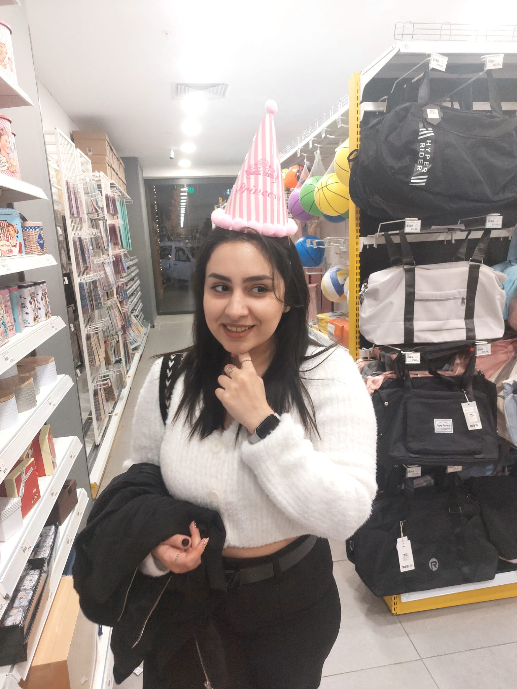
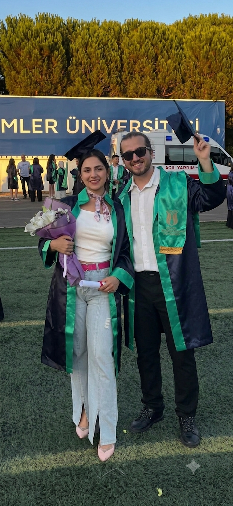
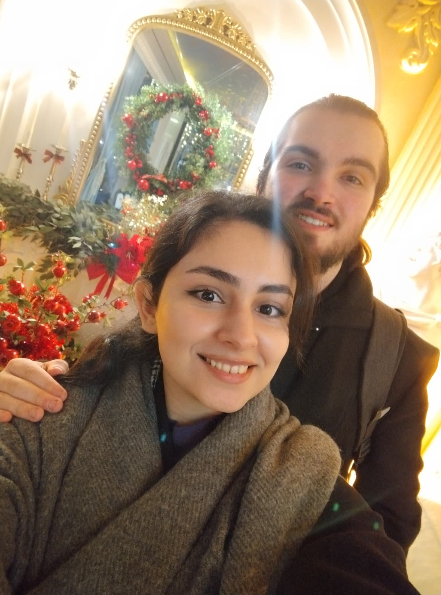

27 Ağustos
İyi ki Doğdun Negin
Bu yılı hak ettin. Gerçekten hak ettin.
Şu an, tam olarak
…ve her biri iyi ki oldu.
Küçük bir itiraf
Sen benim doğum günümü hiç kaçırmadın. Bir kere bile. Ben dün kaçırdım ve fark ettiğim an içim cız etti. Bu yüzden buradayım — geç kaldığım için özür dilemenin en uzun yolu bu sayfa.
Çünkü bir mesaj atıp geçmek istemedim. Sana ait, senin için kurulmuş, başka kimsenin olmayan bir yer olsun istedim.
25 kolay bir yaş değildi. Uzaktaydın, zor günlerden geçtin, korkulan haberlerin içinden geçtin. Ve buna rağmen ayakta kaldın, gülmeyi bırakmadın.
O yüzden bu 26 sıradan bir sayı değil. Bu, atlattığın her şeyin sonunda gelen yaş. Bundan sonrası daha sakin, daha güzel, daha çok senin olsun.
— Doğum gününü kaçıran ama seni unutmayan biri
Biriktirdiklerimiz
Üç kare, üç ayrı gün, aynı gülüş.



26 için dileklerim
Kartlara dokun, arkalarını çevir.
Huzur
Bu yıl hiçbir haberden korkmadan uyuyabilesin.
Yakınlık
Sevdiklerinle aranda mesafe değil, sadece kapı olsun.
Başlangıç
Ertelediğin ne varsa bu yıl başlasın.
Kahkaha
Sebepsiz yere, nefesin kesilene kadar gülesin.
Yol
Gitmek istediğin her yere, istediğin zaman gidebilesin.
Kolaylık
Bu sefer güçlü olmak zorunda kalmayasın.
Mumları üflemeyi unutma
Dilek tut, sonra pastaya dokun.
Dileğin kabul olsun. 🤍